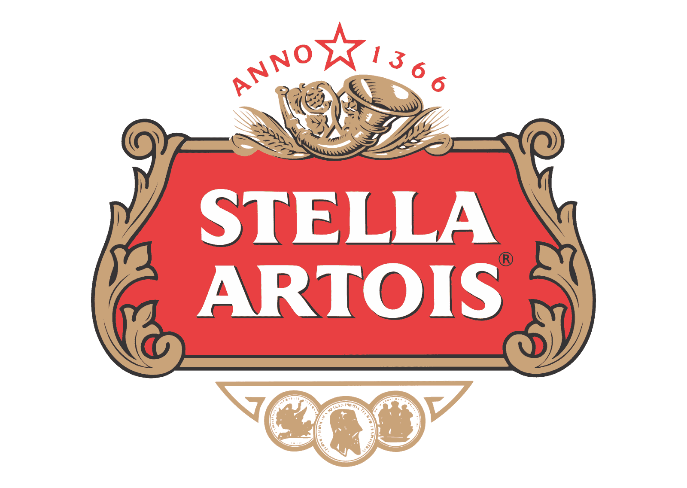
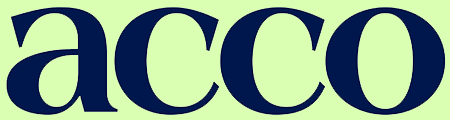
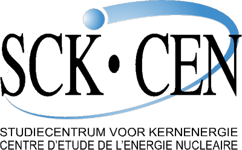
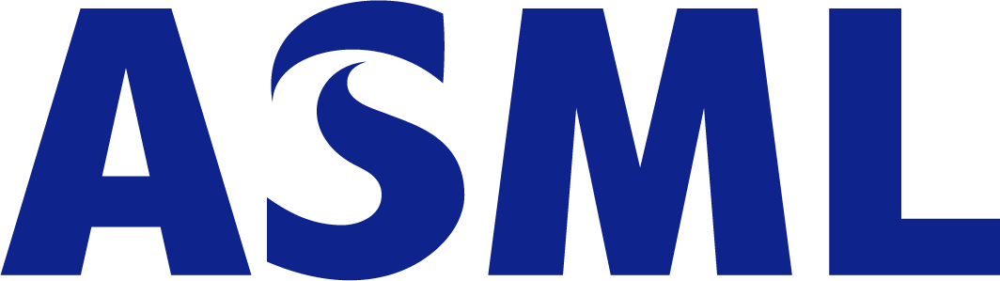

Sponsors

At Stella Artois, we are extremely proud of our Belgian roots. Our story can be seen on every bottle of Stella Artois. If you look closely, hints of our origins are proudly displayed.
By 1366 roots of our brewing tradition had been established in the city of Leuven, Belgium– which is also where the original Den Hoorn brewery was founded. Den Hoorn laid the foundation for the quality taste and standard Stella Artois is known for. The symbol of the Den Hoorn Brewery is proudly displayed in Stella Artois' cartouche to this day.
Sebastian Artois was admitted to the Leuven Brewer’s Guild as a Brew Master in 1708, and only nine years later purchased the Den Hoorn brewery. In memoriam, you can find his last name on the brewery and every bottle of Stella Artois around the world.
The Artois Brewery was so beloved internationally and locally, a special batch was created as a Christmas gift to the people of Leuven. That special batch was the first to officially include "Stella" in its name. "Stella", meaning star in Latin, pays homage to this original occasion, accompanied by a star on every bottle.
So next time you see a bottle of Stella Artois, take note of the rich history paired with the rich flavor on and in every bottle.

At Acco we bring knowledge to you. But we also create knowledge with you. As a student, you will find all of the study material you need in our bookstore and e-shop. As a teacher or professional, you can rely on us to publish your work. We will help you to develop your ideas and work with you to find the best possible way of reaching your target audience.

As a research centre dealing with peaceful applications of radioactivity, SCK•CEN is an indispensable part of our society. We perform forward-looking research and develop sustainable technology. In addition, we organise training courses, we offer specialist services and we act as a consultancy.

ASML's vision is to enable affordable microelectronics that improve the quality of life. To achieve this, our mission is to invent, develop, manufacture and service advanced technology for high-tech lithography, metrology and software solutions for the semiconductor industry.